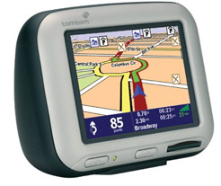
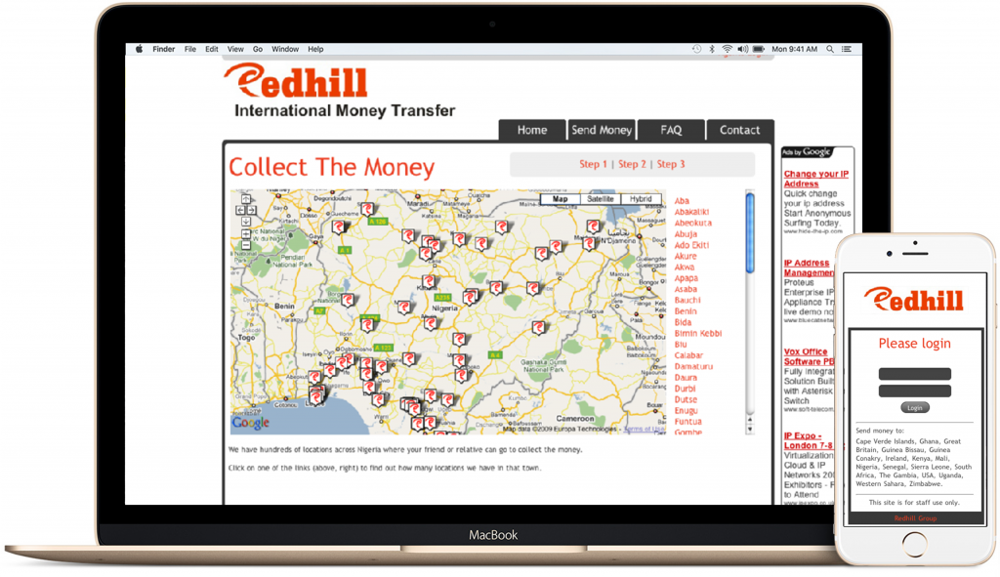

My journey
Getting into startups at 19. Building a mobile first, international money transfer platform. Helping startups scale rapidly. Then living the 4 Hour Work Week...
I've been passionate about startups and being an "indie-hacker" since 2006, when I created a Location Based Services company with my father called nav-poi.com. The platform enabled users to download the locations of their favourite brands and points of interest, then upload them to their satnav's. Once the file was installed the user could be directed to the nearest location with just a few taps.
As with many startups, we focused entirely on building the product and nothing else. With the exception of Virgin Mobile, the project got very little attention and came to a close. My father went to work for Rolls Royce and, I ended up focusing on web design as a freelancer. Eventually, I transitioned to working for FamilyMosaic, one of the largest housing and care and support services providers in London. While at FamilyMosaic I built an intranet portal for the Asset Management team, dramatically reducing inbound calls for frequently updated information.
Building a mobile first, money transfer platform
In late 2007, I joined Redhill Card Services which was an international calling card and, money transfer startup. When I arrived, their plan was to compete with Western Union with point-of-sale terminals in stores. As we had minimal resources, I proposed that we created a mobile optimised, web-based platform. The web-based approach allowed us to dramatically reduce roll-out costs and enabled agents to make more money because they could enter transactions while on the move. While we were successful in getting the company off the ground, our clients were hit hard by the financial crisis in 2008, forcing the company to close.
Once Redhill came to an end, I become convinced that part of the reason the Startups I was a part of failed, was due to my lack of marketing and sales knowledge. So, I decided to learn as much as I could about both topics.
Growing with ihoirzon
While learning about marketing began consulting for small retailers and startups like Mixtape Madness (now more than 500 million streams). After some time, I accepted an internship at a company called ihorizon, an innovative accounting firm for tech startups. I was there for a short time but, I was quickly promoted several times and, became the Head of Operations and Communications. My role meant I was responsible for everything non-accounting. I had to ensure the team were happy and productive at all times while rolling out a marketing plan.
This role was very demanding and I thoroughly enjoyed. It allowed me to put the marketing theory into practice while taking on a verity of challenges that came up daily. Operationally, I was creating and managing new processes to support our rapid growth. From a marketing perspective, I proposed rebranding the company, then rolled out a content marketing strategy based on events, blogging and an email newsletter. The plan proved to be very successful as the company grew to 25+ people and the client base more than doubled.
Peter is a well-rounded professional with a real passion for startups. He understands the scene well and, can think around what works and what won't. He has great attention to detail and dealt well with any task he took on.
He was a real pleasure to work with.
 Pratik Sampat, ihorizon CEO
Pratik Sampat, ihorizon CEO
The role at ihorizon was very demanding and I thoroughly enjoyed. It allowed me to put the marketing theory into practice while taking on a verity of challenges that came up daily. Operationally, I was creating and managing new processes to support our rapid growth. From a marketing perspective, I proposed rebranding the company, then rolled out a content marketing strategy based on events, blogging and an email newsletter. The plan proved to be very successful as the company grew to 25+ people and the client base more than doubled.
Transitioning from clients to a 4 Hour Work Week
After ihorizon I took some time off and then decided to focus on helping more businesses scale by starting Armoury Digital.
The aim of the Armoury was to focus on marketing funnels, not simply websites. I helped my clients make hundreds of thousands of pounds and, successfully launched or managed projects across a wide verity of verticles; Professional Services firms, funded Startups, boutiques, multi-award winning YouTube shows, animation studios, speakers and fashion influencers.
I then went on to leverage my skill-set into building a portfolio of cash generating websites. My goal at this point was to automate as much as possible. I achieved the 4 Hour Work Week within a few months, which lasted for just over a year.
Currently looking for new projects
I'm still passionate about working with Startups and web-based projects, however, I have decided to step back form marketing in favour of staying up all night to find that missing semicolon.
I have always wanted to be able to rapidly build prototypes for SaaS apps so I have been getting back up to speed with front-end development. Starting with Ruby on Rails and modern JS frameworks like React.
I also looking to join a tight-kint team, potentially as a Product Manager, Operations or Web Developer. I'm particularly interested in working with talented teams who are taking on problems with a significant business opportunity.
If you have got a project in mind I am always happy to meet for a coffee, you never know where a conversation might go…